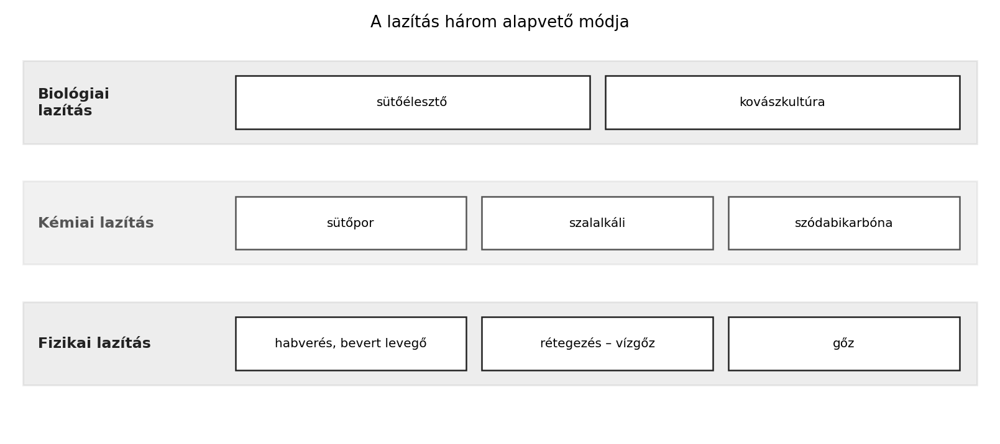
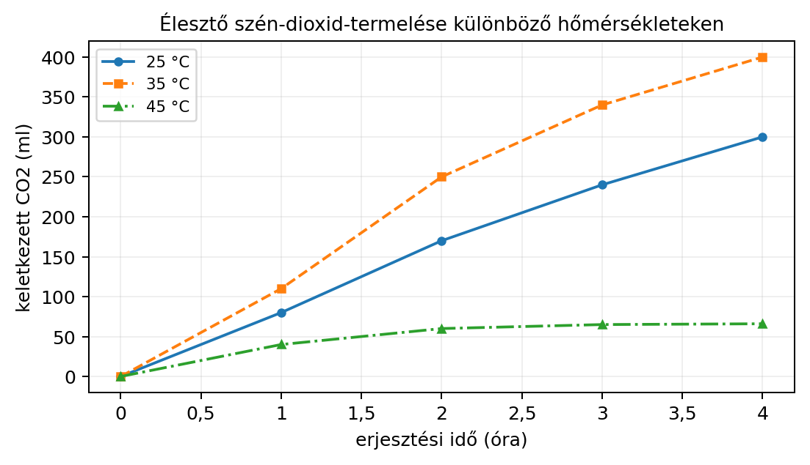
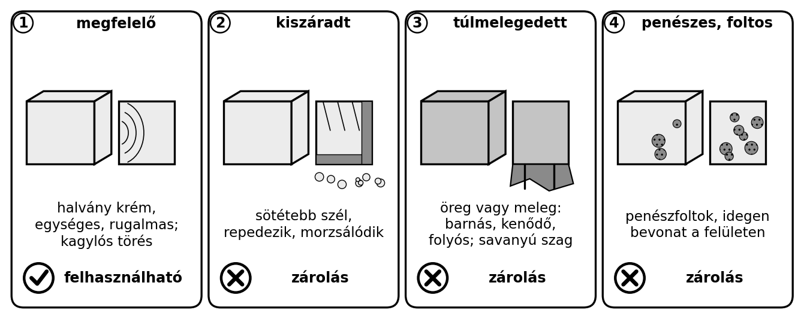

A pékségben a vizes tészta akkor kel meg, ha gáz képződik benne. Hajnalban, amikor a pék a kenyér- és kalácstésztákat indítja, az élesztő állapota, a tésztahőmérséklet és az esetleges kémiai lazító adagja együtt dönti el, hogy a sütőbe kerülő termék pórusos, könnyű bélzetű lesz-e. Ha az élesztőt rosszul tárolták, vagy a sütőport összekeverik az élesztővel, a termékhiba már a dagasztás előtt eldől. Ezért ebben az alfejezetben a lazítási módokat és a sütőélesztőt úgy tanuljuk meg, hogy a későbbi kovászolási, tésztaérési, kelesztési és mézeskalács-készítési lépéseket okból értse a tanuló.
Definíció. A lazítás olyan fizikai, biológiai vagy kémiai folyamat, amely a tésztában vagy masszában gázbuborékokat hoz létre, illetve tart meg, és ezzel a késztermék bélzetét pórusossá, könnyűvé teszi.
Megjegyzés. A pék szakmában a „laza bélzet” nem hibát jelent, hanem a megsült termék finom, egyenletes pórusszerkezetű, jól vágható és jól emészthető állományát. A lazítás minőségét a pórusok nagysága, egyenletessége és a héj/bél arány együtt adja.
A lazítás három fő módja:
A gyakorlatban egy terméknél több lazítási mód is kombinálódhat. Például a leveles tészta fizikai rétegezését gyakran kiegészíti élesztő vagy sütőpor, a mézeskalácsnál pedig a kémiai lazítás mellett a méz és a tojás is javíthatja az állományt. A következő ábra a három alapvető módot mutatja.

A következő ábra a biológiai lazítás hőmérsékletfüggését mutatja.

Az ábrán látszik, hogy a 35 °C-os tészta gyorsabban termel gázt, mint a 25 °C-os, de a 45 °C-os környezet már károsítja az élesztőt: az elején kevés gáz képződik, majd a termelés leáll. A pék a tésztahőmérsékletet tehát nem emelheti tetszőlegesen a gyorsabb kelés érdekében.
Definíció. A biológiai lazítás olyan lazítási mód, amelyben élő mikroorganizmus – sütőélesztő vagy kovászkultúra – a tészta cukortartalmából szén-dioxidot és alkoholt termel, a keletkező gáz pedig feszíti a tésztát.
A sütőélesztő leggyakrabban a Saccharomyces cerevisiae faj, azaz egy egysejtű, sarjadzással szaporodó élesztőgomba. A tésztában oxigénhiányos környezetben erjedést végez. A folyamat egyszerűsített egyenlete:
A keletkező etanol a sütés, illetve a kelesztés egy részénél elpárolog, a szén-dioxid pedig a tésztát feszíti. Az élesztő mellett a kovász tejsavbaktériumai is termelhetnek szén-dioxidot és savakat; ezért a kovászos kenyér lazítása összetettebb, mint a tiszta élesztős eljárás.
A biológiai lazítás sebessége függ:
A só magas koncentrációban gátolja az élesztőt, ezért a dagasztás elején a só és az élesztő közvetlen érintkezését kerülni kell. A cukor kis mennyiségben táplálja az élesztőt, de nagyon magas cukortartalmú tésztában ozmotikus nyomással lassíthatja a működését – ezért a dúsított kalácstésztákhoz több élesztő kell, és hosszabb kelési idővel számolunk.
Továbbvitt eredmény. A biológiai lazítás gáztermelési sebessége és az élesztő hőmérsékleti optimuma alapozza meg az A kovászolás célja, az A tésztaérés folyamatai és az A kelesztés célja, feltételei és folyamatai alfejezeteket. A préselt élesztő vizsgálatát a Élesztő-, sóoldat- és tojásvizsgálat tárgyalja.
Definíció. A kémiai lazítás során a tésztába kevert kémiai anyagok – leggyakrabban sütőpor vagy szalalkáli – nedvesség vagy hő hatására bomlanak, illetve reagálnak, és közben gázt, főként szén-dioxidot vagy ammóniát fejlesztenek.
A kémiai lazítás nem igényel élő mikroorganizmust és hosszú kelesztési időt, ezért sütőporos és mézes tésztáknál, valamint olyan masszáknál használják, ahol az élesztő nem tudna megfelelően dolgozni.
A leggyakoribb kémiai lazítószerek:
A szalalkáli bomlása egyszerűsítve:
Figyelem. A szalalkáli ammóniagőzt fejleszt, ezért csak nagy felületű, vékony, kiszáradó termékekhez (például mézeskalács, ostya, egyes teasütemények) szabad használni, mert a vastag, nedves bélből az ammónia nem távozik, a tészta bennreked, és kellemetlen szagot okoz. Munkavédelem: a bemérésnél és sütésnél keletkező ammóniagőz miatt a sütőtér elszívása és a helyiség szellőzése szükséges (ellenőrizendő: biztonsági adatlap). A kémiai lazítószerek pontos adagolása, kezelése és biztonsági szabályai az A mézeskalács nyersanyagai és a kémiai lazítószerek, valamint az Érlelés, lazítás, összegyúrás és ízesítés alfejezetekben kerülnek elő részletesen.
Definíció. A fizikai lazítás során a tésztába, masszába levegőt viszünk be, vagy a sütés közben keletkező vízgőz, illetve a rétegek közé zárt zsiradék elpárolgó nedvessége hoz létre pórusokat.
Fizikai lazítási módok:
A fizikai lazítás ritkán szerepel egyedül. A leveles tésztánál például a rétegezés és a vízgőz mellett néhány üzemben élesztőt is adnak, ami további gázfejlődést biztosít. A péknek mindig tudnia kell, hogy az adott terméknél melyik lazítási mód a fő, mert ettől függ a kelesztési idő, a sütőbe vetés és a sütési paraméter.
Definíció. A sütőélesztő préselt, friss vagy szárított formában forgalmazott, szelektált Saccharomyces cerevisiae élesztőgomba-tömeg, amely a sütőiparban biológiai lazításra használatos.
A friss, préselt élesztő összetétele körülbelül:
Az élesztő tehát nemcsak gáztermelő nyersanyag, hanem fehérjét és B-vitaminokat is tartalmaz. A fenti értékek tájékoztató jellegűek; a pontos adatokat a gyártói adatlapok tartalmazzák (ellenőrizendő: a beszállított élesztő gyártói specifikációja).
Az élesztő életfeltételeit a Mikroorganizmusok és életfeltételeik alfejezetben tanult általános szabályokból vezetjük le:
A tésztatechnológiában a tésztahőmérsékletet ezért 24–28 °C körülre állítják be a legtöbb élesztős tésztánál (ellenőrizendő: az üzemi technológiai lap). Ennek számítását a Tésztahőmérséklet és dagasztóvíz számítása alfejezet tárgyalja.
A friss préselt élesztő érzékszervi jellemzője:
Hiba. A szürkés, barnás, folyós, erősen savanyú vagy dohos szagú élesztő nem használható fel. A hibás élesztő rontja a kelést, idegen mikroflórát visz a tésztába, és minőségi kockázatot jelent.
Az átvételkor és felhasználás előtt a tömböt érdemes eltörni, mert a törésfelületen a hiba jobban látszik. Az alábbi ábrán az 1. tömb megfelelő: halvány krém színű, egységes, rugalmas, kagylós törésű. A 2. kiszáradt (sötétebb szél, morzsálódik), a 3. túlmelegedett vagy öreg (barnás, kenődő, folyós), a 4. penészes vagy foltos – ezeket zárolni kell.

A hibás élesztőt nem szabad „nagyobb adaggal” pótolni: a romlott élesztő idegen mikroflórát és savanyú mellékízt visz a tésztába. A zárolt tételt jelölni, elkülöníteni és dokumentálni kell (ellenőrizendő: a pékség HACCP-terve).
HACCP. A friss élesztő hűtést igénylő, romlandó nyersanyag. A biztonságos tárolási hőmérséklet jellemzően 0–4 °C, a javasolt maximális tárolási idő rövid, például a gyártói adatlap szerinti lejárati időn belül (ellenőrizendő: a pékség HACCP-terve és az élesztő gyártói adatlapja). Az átvételkor ellenőrizni kell a csomagolást, a minőségmegőrzési vagy fogyaszthatósági időt, a hőmérsékletet és a sérüléseket. A bontott élesztőt jelölni kell, és hűtve, elkülönítve, FIFO/FEFO elv szerint kell felhasználni.
A fagyasztott élesztőt csak fokozatosan, hűtőben szabad felengedni; felengedés után újrafagyasztani tilos, mert az élesztősejtek károsodnak, és a termék nem kel megbízhatóan. Üzemben fagyasztott élesztőt csak a gyártó erre szánt termékéből és utasítása szerint használunk. A fagyasztott élesztőre vonatkozó pontos hőmérséklet és idő a gyártói adatlapon ellenőrizendő.
Allergén. Maga az élesztő általában nem allergén, de a szárított élesztőtermékek egyes kiszereléseinél előfordulhat, hogy a gyártó az allergén-keresztkontaminációt jelzi, például tejet, tojást vagy glutént feldolgozó üzemben csomagolták. Ezt a nyersanyag specifikációjánál ellenőrizni kell. Az allergének kezelésének általános szabályait az Allergének kezelése a pékségben alfejezetben tanuljuk.
A kémiai lazítószerek nem helyettesítik az élesztőt, hanem más termékcsoportokhoz valók. A sütőpor a sütés hőmérsékletén fejleszti a gáz nagy részét, ezért sütőporos tésztáknál a kelesztés rövid vagy teljesen elmarad, és a gáztermelés a kemencében következik be. A szalalkáli ugyancsak hőre bomlik, de ammóniája miatt csak vékony, kiszáradó termékekhez használható; a gőz miatt a munkahelyi szellőzésről is gondoskodni kell.
A kémiai lazítószerek adagolását a lisztre vetített százalékban adjuk meg. Tanulási példaként sütőporból 2–4%, szalalkáliból 0,5–1% lisztre vetítve használható, de az érték mindig termék- és gyártmányfüggő (ellenőrizendő: a gyártmánylap vagy a gyártói adatlap). A túladagolás keserű utóízt, kellemetlen ammóniagőzt, egyenetlen pórusszerkezetet és héjrepedést okoz.
Példa. 10 kg liszthez 3% sütőport számolunk. A sütőpor mennyisége:
Példa. 25 kg lisztből mézeskalácstésztát készítünk, a szalalkáli adag lisztre vetítve 0,8%. A bemérendő szalalkáli:
Figyelem. A kémiai lazítószereket élelmiszertől elkülönítve, száraz helyen, feliratozott edényben kell tárolni. Szalalkálit adagoláskor a porképződés kerülendő; a gyártói utasítás szerint védőkesztyű, szükség esetén védőszemüveg használandó. A vegyszerbiztonsági szabályok ellenőrzés nélkül nem írhatók felül.
Előírás. Az élelmiszer-adalékanyagok, köztük a sütőipari kémiai lazítók, az 1333/2008/EK rendelet hatálya alá tartoznak (ellenőrizendő: a rendelet hatályos állapota, az engedélyezett adalékanyagok és alkalmazási feltételek). Az élesztő általában nem adalékanyag, hanem élelmiszer-összetevő vagy technológiai segédanyag; a pontos besorolást az adott készítmény szerint kell ellenőrizni.
Előírás. A kémiai lazítószerek nem használhatók olyan termékhez, amelynél az adott adalékanyag nem engedélyezett, illetve olyan adagban, amely meghaladja az engedélyezett szintet (ellenőrizendő: az aktuális uniós adalékanyag-jegyzék és a Magyar Élelmiszerkönyv vonatkozó előírásai). A pontos, számszerű határérték tanulási példaként sem kezelhető előírásként.
Egy tanpékségben hétvégére foszlós kalácsot készítettek. A tanuló a friss élesztőt a gépkocsiban, nyári melegben hagyta egy órára, majd a tésztát 38 °C-os vízzel dagasztotta be. A tészta alig kelt, a kalács sűrű, tömör bélzetű lett. A hibakeresésnél megmérték a tésztahőmérsékletet, és ellenőrizték az élesztőt: a csomag hőmérséklete 40 °C fölött volt, az élesztő szürkés, folyós és savanyú szagú lett. Az ok tehát nem a liszt, hanem a hőkárosodott élesztő és a túl meleg dagasztóvíz volt. A helyes gyakorlat: az élesztőt hűtve szállítani, a dagasztóvíz hőmérsékletét úgy beállítani, hogy a tészta 24–28 °C-os legyen, és felhasználás előtt az élesztőt érzékszervileg ellenőrizni.
Az élesztő gyors vizsgálata üzemi körülmények között:
A sütőpor és szalalkáli kémiai lazító adagját mérlegeléssel kell ellenőrizni, nem kanállal vagy becsléssel. A kémiai lazítószerek csomómentesek legyenek, és ne legyen lejárt a minőségmegőrzési idejük.
Tünet: a tészta nem kel, az élesztőt langyosnak gondolt, de valójában 45–50 °C-os vízben futtatták. Ok: hőkárosodás. Helyes gyakorlat: a felfuttató víz 25–30 °C legyen, és hőmérővel ellenőrizzük.
Tünet: a tészta lassan, egyenetlenül kel; a dagasztóba a sót és az élesztőt egy kupacba tették. Ok: a tömény só helyileg vizet von el az élesztősejtektől. Helyes gyakorlat: a dagasztás elején az élesztőt a liszthez, a sót pedig a megdagasztott tésztához vagy a víz egy részéhez adagoljuk, technológiai sorrend szerint.
Tünet: mézeskalács keserű, erős ammóniaszagú, a héj repedt. Ok: szalalkáli túladagolás vagy vastag tésztához használt szalalkáli. Helyes gyakorlat: mérlegelni, a gyártmánylap adagját betartani, és vastag termékhez inkább sütőport vagy vegyes lazítót használni.
Tünet: sütőporos tészta sütés közben hirtelen összeesik. Ok: a sütőpor túl korán, már a kelesztés alatt elfogyott, mert a tészta túl sokáig állt, vagy túl meleg volt. Helyes gyakorlat: a sütőporos tésztát rövid ideig pihentetni, és a gyártói adatlap szerinti hőmérsékleten sütni.
Az önellenőrző kérdések megoldását az alfejezet végén, a Megoldások részben adjuk meg.
1. feladat (A) Nevezd meg a három alapvető lazítási módot, és mindegyikhez adj egy-egy sütőipari termékpéldát.
2. feladat (A) Írd le a sütőélesztő friss, préselt formájának érzékszervi követelményeit (szín, szag, állomány).
3. feladat (B) 15 kg liszthez 3,5% friss élesztőt szeretnénk adni lisztre vetítve. Számítsd ki a bemérendő élesztő tömegét grammban és kilogrammban.
4. feladat (B) 20 kg lisztből mézeskalácstésztát készítünk, a szalalkáli adag lisztre vetítve 0,7%. Hány kilogramm szalalkálit kell bemérni?
5. feladat (C) Egy pékségben a kalácstészta kelése szokatlanul lassú. Milyen élesztővel kapcsolatos okok jöhetnek szóba, és hogyan ellenőriznéd ezeket?
6. feladat (D) Vizsgáld meg a következő technológiai lépést: „Az élesztőt 48 °C-os vízben futtatjuk, majd a liszthez keverjük.” Milyen hibát követhet el a pék, és mi a helyes eljárás? A feladat előkészíti a Tésztahőmérséklet és dagasztóvíz számítása alfejezetet.
A biológiai lazításnál az élesztő fokozatosan, a kelesztés alatt termeli a gázt, és hosszabb idő kell hozzá. A kémiai lazításnál a gáz főként a sütés hőmérsékletén, rövid idő alatt szabadul fel, ezért a kelesztési idő rövidebb vagy elmarad.
A gáztermelés optimuma kb. 32–35 °C; a tésztát ennél hűvösebben, technológiai okból 24–28 °C-on vezetjük (egyenletes érés, íz, gáztartás). 40–45 °C fölött az élesztősejtek károsodnak, 50 °C környékén gyorsan elpusztulnak.
A szalalkáli sütéskor ammóniagőzt fejleszt. Technológia: vastag, nedves termékben az ammónia bennreked és kellemetlen szagot ad, a vékony, nagy felületű, kiszáradó termékből viszont távozik, ezért csak ilyenhez való. Munkavédelem: a bemérésnél és sütéskor ammóniagőz keletkezik, ezért a sütőtér elszívása és a helyiség szellőzése szükséges (ellenőrizendő: biztonsági adatlap).
Romlott préselt élesztő: szürkés, barnás szín, savanyú, dohos vagy alkoholos szag, folyós, morzsálódó, penészes felület.
A sütőpor adagolása méréssel, mérlegen történik, nem kanállal. A mennyiséget a gyártmánylap vagy technológiai lap lisztre vetített százalékából számoljuk.
A só magas koncentrációban gátolja az élesztőt. Ha közvetlenül egymásra kerülnek, az élesztő helyileg károsodik, a kelés egyenetlen lesz. A sót és az élesztőt a dagasztás sorrendjébe illesztve kell adagolni.
A három lazítási mód: biológiai (élesztő, kovász – kenyér, kalács), kémiai (sütőpor, szalalkáli – sütőporos sütemény, mézeskalács), fizikai (habverés – piskóta; rétegezés – leveles tészta; gőz – leveles tészta sütése).
Szín: halvány krém, egységes. Szag: kellemesen élesztős, nem savanyú, nem dohos, nem alkoholos. Állomány: tömör, nedves, de nem folyós; nyomásra rugalmas, nem morzsálódik.
Adott: liszt tömege 15 kg, élesztő adag 3,5% lisztre vetítve.
Keresett: élesztő tömege .
Képlet:
Behelyettesítés:
Átváltva:
Ellenőrzés: 15 kg 3,5%-a 0,525 kg, tehát az eredmény reális.
Adott: liszt 20 kg, szalalkáli adag 0,7% lisztre vetítve.
Keresett: .
Képlet:
Behelyettesítés:
Az eredmény 0,14 kg, azaz 140 g szalalkáli.
Lehetséges okok:
Ellenőrzés: érzékszervi vizsgálat, felfuttatási próba, tésztahőmérséklet mérése, a receptúra és a technológiai sorrend áttekintése.
Hiba: az élesztőt 48 °C-os vízben futtatja. Ez 40–45 °C fölötti hőmérséklet, amely károsítja vagy elpusztítja az élesztőt. Helyes eljárás: a felfuttató víz hőmérséklete 25–30 °C legyen, és a dagasztóvíz hőmérsékletét úgy kell beállítani, hogy a kész tészta 24–28 °C körül, az üzemi technológiai lap szerint alakuljon.
A lazítás a tésztában gázbuborékokat hoz létre, és ezzel a megsült termék bélzetét pórusossá teszi. A biológiai lazítás során a sütőélesztő (Saccharomyces cerevisiae) a tészta cukrából főként szén-dioxidot és alkoholt termel; a kovászkultúra ezt tejsavbaktériumokkal egészíti ki. A kémiai lazítás sütőporral vagy szalalkálival, hő és nedvesség hatására fejleszt gázt. A fizikai lazítás habveréssel, rétegezéssel vagy vízgőzzel dolgozik. A friss, préselt élesztő gáztermelési optimuma kb. 32–35 °C, a tésztát mégis 24–28 °C-on vezetjük (tanulási értékek, ellenőrizendő: technológiai lap); 40–45 °C fölött az élesztő károsodik, ezért a dagasztóvizet nem szabad túlmelegíteni. Az élesztő érzékszervi jelei: világos krém szín, kellemes illat, tömör, rugalmas állomány; hűtve 0–4 °C-on rövid ideig tárolható. A kémiai lazítószereket mérlegeléssel, gyártmánylap szerint kell adagolni, a szalalkáli csak vékony, kiszáradó termékhez használható (a vastag bélből az ammónia nem távozik), az ammóniagőz miatt pedig a munkahely szellőztetése is szükséges. A lazítási módok és az élesztő életfeltételei alapozzák meg a kovászolás, a tésztaérés, a kelesztés és a mézeskalács-készítés fejezeteit. A préselt élesztő vizsgálatát és a szárított élesztő helyettesítését a következő alfejezetek tárgyalják.